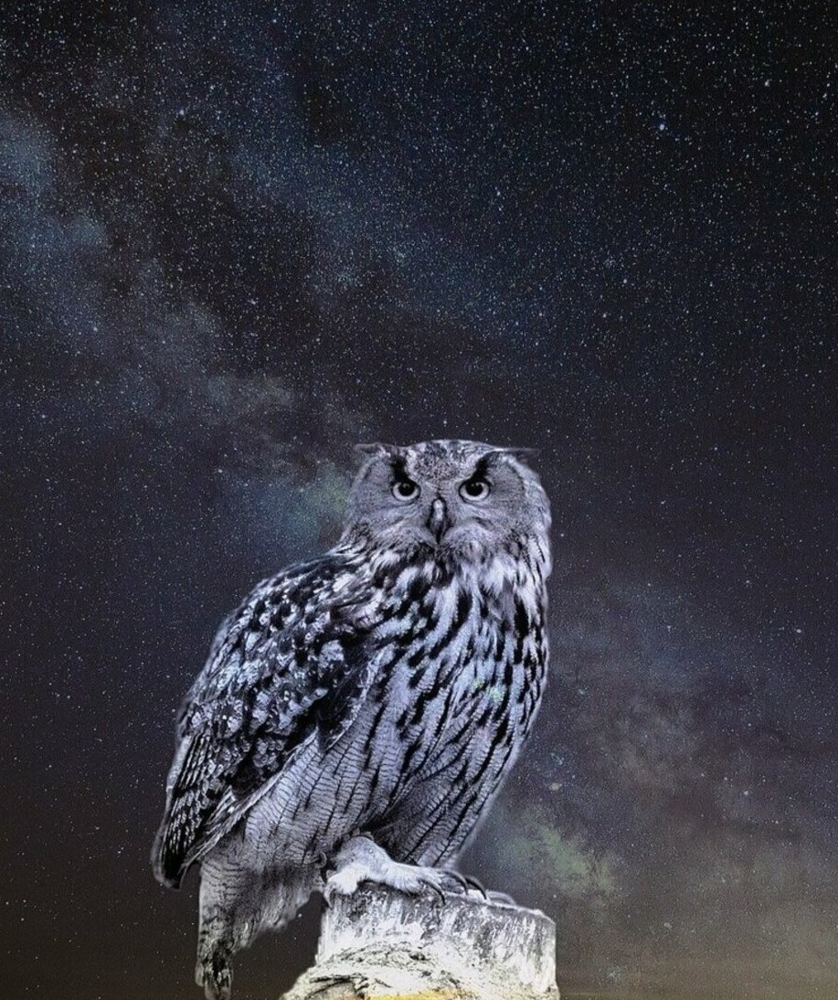
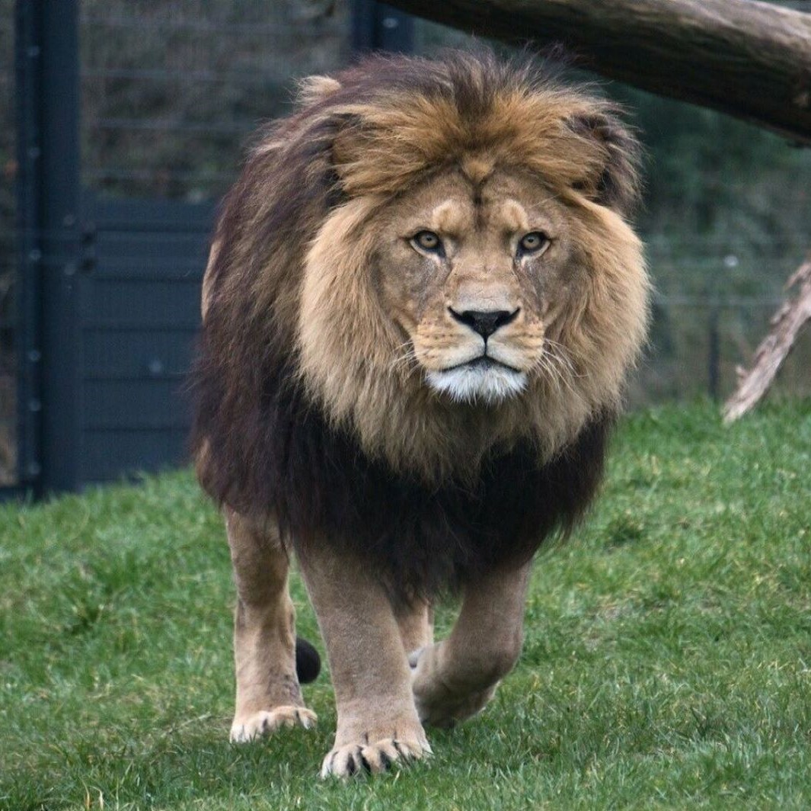

부엉이
당신은 조용하고 과묵하며 논리와 분석으로 문제를 해결하기 좋아하는 사람이군요
과묵하지만 관심이 있는 분야에 대해서는 말을 잘하며 이해가 빠르고
높은 직관력으로 통찰하는 재능과 지적 호기심이 많네요.
당신은 개인적인 인간관계 등에 별로 관심이 없으며 매우 분석적이고 논리적이며 객관적 비평을 잘 합니다.
하지만 사교성이 결여되기 쉬운 경향이 있고,
때로는 자신의 지적 능력을 은근히 과시하는 수가 있기 때문에 거만하게 보일 수 있다는 것을 조심하세요.
당신의 유형은 보기드문 유형으로, 전 세계 인구의 대략 3%가 이 유형에 속해있다고 합니다.


WORST 궁합 메니멀
BEST 궁합 메니멀